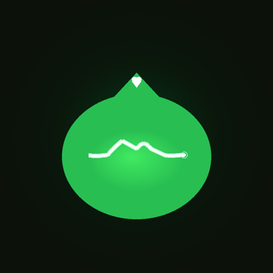
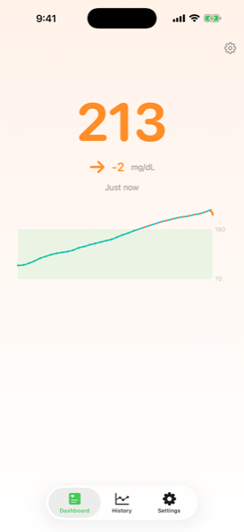
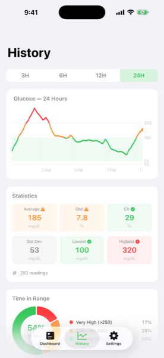
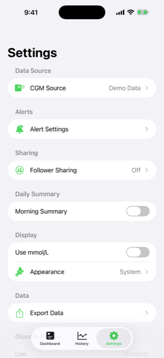
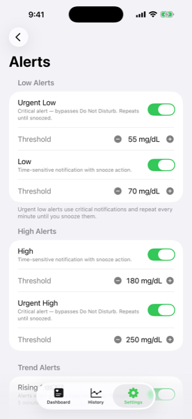
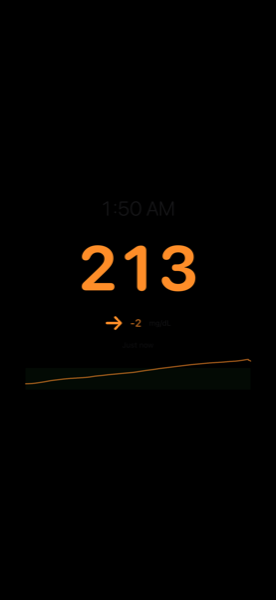

GlucoRelay
One iPhone dashboard for every CGM. Dexcom, FreeStyle Libre, Medtronic CareLink, Nightscout, Medtrum, and Apple Health — all in one place. Built by a dad for families managing diabetes together.
Screenshots





Scroll to see more →
Why GlucoRelay Exists
My son wears a Medtronic 780G pump. His cousin uses Dexcom G7. My friend's daughter just switched to a FreeStyle Libre. Every family I know juggles two or three different CGM apps that don't talk to each other.
I wanted one app where I could see all of them. Sugarmate is Dexcom-only. Happy Bob is Dexcom-only. Every vendor app supports its own brand. So I built GlucoRelay.
Supported CGM Sources
Dexcom
Share (G5, G6, G7, ONE, Stelo) for real-time plus OAuth 2.0 API.
FreeStyle LibreLinkUp
Libre 2, 2 Plus, 3, 3 Plus across 11 regions.
Medtronic CareLink
MiniMed 670G, 770G, 780G, Guardian — 40+ countries.
Nightscout
Self-hosted open-source CGM cloud.
Medtrum EasyView
Nano and TouchCare A7+ support.
Apple Health
Any CGM that syncs readings to Health.
CloudKit Follower
Share with family using an 8-character code. No account required.
Demo Mode
Try the app with simulated data — no CGM needed.
Features
Apple Watch
Complications for every watch face, always-on friendly.
Widgets & Lock Screen
Home Screen widgets in 3 sizes, Lock Screen, and StandBy support.
Live Activities
Glucose in the Dynamic Island and on the Lock Screen, live-updating.
Nightstand Mode
Tap the glucose number for a bedside clock with the current reading.
Predictive Alerts
Linear regression forecasts lows and highs 15–30 minutes ahead.
Critical Alerts
Bypass Do Not Disturb and Silent Mode for urgent glucose events.
Daily Summary
Morning recap with overnight time-in-range and averages.
Pump Status
Universal display of battery, reservoir, sensor life, and IOB.
CSV & PDF Export
Export ranges for appointments, logs, or personal analysis.
Siri Shortcuts
“Hey Siri, what's my blood sugar?” Works with any source.
Help Me Test It
I own a Medtronic CGM. To verify GlucoRelay works correctly with every other CGM brand, I need testers from across the diabetes community. The TestFlight beta is open with no waitlist.
Especially looking for:
- FreeStyle Libre 3 and Libre 2 users (every region)
- Dexcom Share users (G5, G6, G7, ONE)
- Nightscout self-hosted users
- Medtrum EasyView users (extremely rare — please come forward!)
- Parents using follower mode for their child
Take a screenshot anywhere in the app to send a debug report — no typing required. Or email support@approvethemove.com.
Important Disclaimer
GlucoRelay is not a medical device. It is a viewer that reads data from the CGM cloud service you already use. Always verify readings with your primary CGM receiver before making treatment decisions. GlucoRelay is not affiliated with Dexcom, Abbott, Medtronic, Medtrum, or any CGM manufacturer.
Privacy
GlucoRelay runs with zero backend. Your CGM credentials stay on your device in the iOS Keychain. HealthKit access is read-only. No analytics, no tracking, no advertising. Follower sharing uses Apple CloudKit; readings expire after 24h.